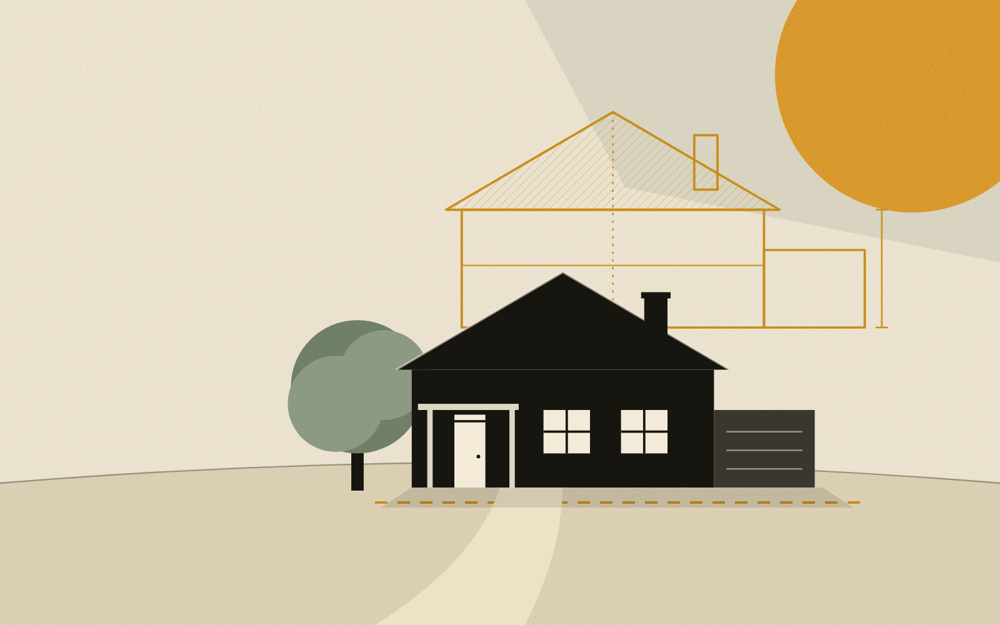
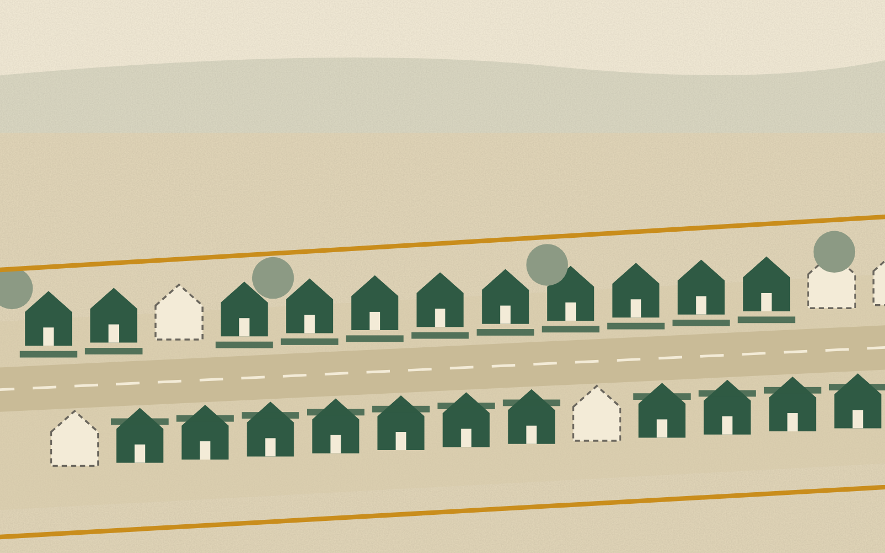
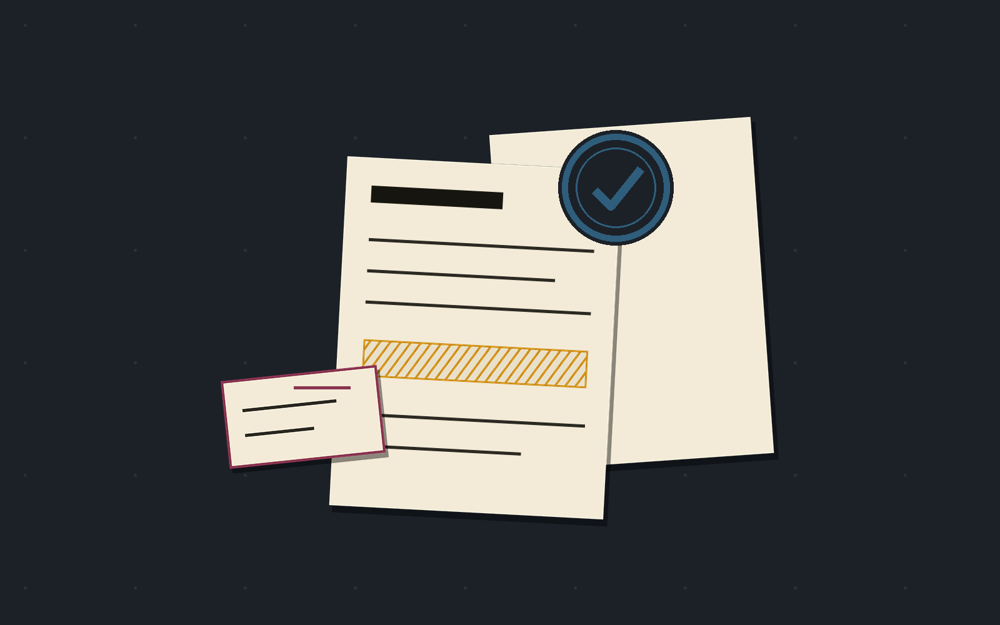
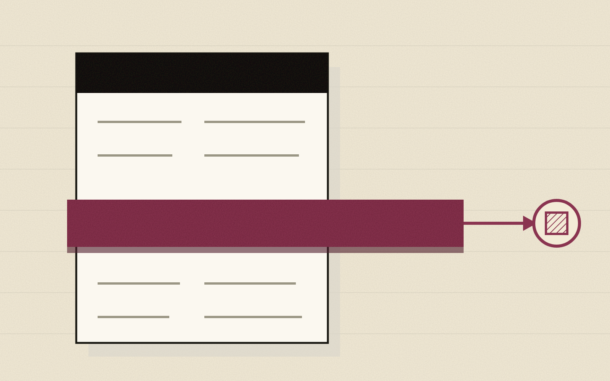

Fieldnotes
Make impossible protection possible.
Use what we know about risk to change what we can do about it.
-

01 Home Again Recovery arranged before the loss. -

02 Negotiated Neighborhood Agents assemble protection no household could get alone. -
 03
Resilience Grid
Prevention changes what can be insured.
03
Resilience Grid
Prevention changes what can be insured.
-

04 Backed to Act Insurance makes AI autonomy acceptable. -

05 OpenCover The buyer never stops working.